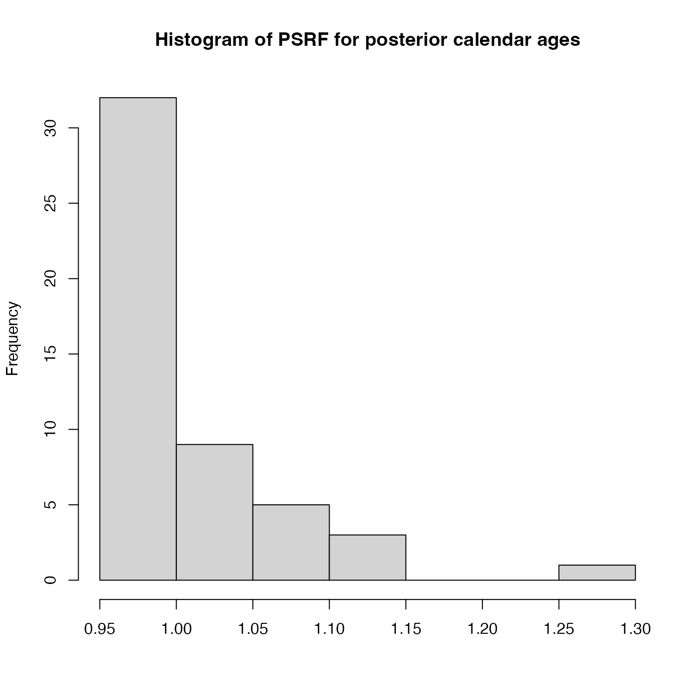

Plot Histogram of the Gelman-Rubin Convergence Diagnostic for Multiple Independent MCMC Chains
Source:R/PlotGelmanRubin.R
PlotGelmanRubinDiagnosticMultiChain.RdThis plots a histogram of the potential scale reduction factors (PSRF) for each of the individual
posterior calendar age estimates for multiple independent MCMC chains. Achieved by comparing the
within-chain variance with the between-chains variance after n_burn iterations.
The PSRF of each sample's posterior calendar age is calculated.
If the chain have converged to the target posterior distribution, then PSRF should
be close to 1 for all of the samples (a stringent condition is that all values are less than 1.1).
For more information read the vignette: vignette("determining-convergence", package = "carbondate")
Arguments
- output_data_list
A list, each item containing the return value from one of the updating functions e.g. PolyaUrnBivarDirichlet, WalkerBivarDirichlet or PPcalibrate. The minimum number of elements in the list is 2.
- n_burn
The number of MCMC iterations that should be discarded for burn-in. This relates to the total number of iterations
n_iterwhen running the original update functions (not the thinnedoutput_data). Any MCMC iterations before this are not used in the calculations of the PSRF. If not given, the first half of the MCMC chain is discarded. Note: The maximum value that the function will allow isn_iter - 100 * n_thin(wheren_iterandn_thinare the arguments that were given to PPcalibrate) which would leave only 100 of the (thinned) values inoutput_data.
Examples
# Plot results for the example data - n_iter is too small for convergence
# Try increasing n_iter to see the values of the PSRF decrease
po <- list()
for (i in 1:3) {
set.seed(i)
po[[i]] <- PolyaUrnBivarDirichlet(
two_normals$c14_age,
two_normals$c14_sig,
intcal20,
n_iter=400,
show_progress = FALSE)
}
PlotGelmanRubinDiagnosticMultiChain(po)
